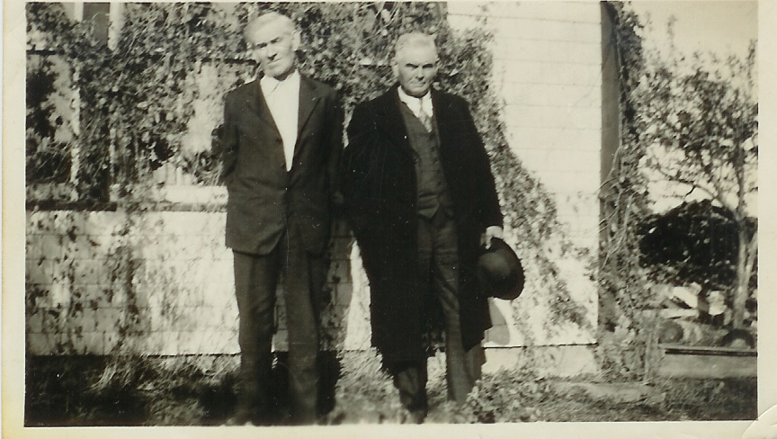

The Family Chronicle
No.71 May 24, 2004
__________________________________________________________________________________
Correction

Elmer Glendenning (1875-1938) and Franklin Glendenning (1876-1937). Thanks Loisanne.
Building a Load of Hay
There was quite an art to building a load of loose hay – and remember, the load was being build on a rack on a truck wagon. For those not familiar with a truck wagon, it was a heavy farm wagon with high wheels. The hayrack sat about three feet off the ground which meant that you had to pitch the hay a minimum of four feet before putting it on the rack and another 6-8 feet when it was loaded. The rack had a bit of a well because the sides were built up to clear the wagon wheels.
The hay would be forked onto the wagon. The first forkfuls were tramped well in the centre of the rack. Then forkfuls of hay were placed around the perimeter. The key was to keep placing lots of hay along the outside and then binding it by adding hay to the middle. The sides of a load of hay were kept higher than the middle. Otherwise, the hay on the sides would just keep slipping off.
A well-built load of hay would be about 7 feet high above the rack with the sides kept straight. It was important to have a solid load because many times it would be taken across a rough field and then a mile or two by road before reaching home.
Once home, a load of hay would be driven into the barn and, if at night, the horses unhitched, taken out through a back door and stabled for the night. Otherwise, the horses would remain hitched to the wagon while the hay was unloaded. It was harder to stick the fork into a load that was left over night.
Both Ken and Glenn remarked about loads being too big for the barn doors – sometimes getting stuck or otherwise being a tight squeeze. Walter used to make a hole at the front of the load so he could be well below the top of the door when driving into the barn.
Ken mentioned that John had a load of hay on the big truck, see photo, and it jammed so hard that the rear stakes broke and the hay tumbled into the yard.
Hay was unloaded by means of a “forker or hay fork”. Some forks were a single spear that pushed into the hay and then the point, which was on a hinge, would be set to secure the hay. Double forks were in the shape of a “U”. The hay was hoisted by means of a long rope and set of pulleys so that it rose from the wagon and went to either left or right to the loft or haymow. When over the mow, the load was tripped by means of a light rope and the load fell and was spread by one or two men.
A horse was hooked to the outer end of the forker line and, on a signal, would walk away from the barn lifting the hay from the wagon. With a shout from the barn, the horse was stopped, the forker line slackened, the horse was turned and went back to the edge of the barn door to await another load. As the youngest, my job was to drive the horse on the forker line. A load of hay was usually taken of in 6 “bites”
One time when we were haying in Napan at “Jimmie MacKnight’s? (Just above Edith Bremner’s), my job was to take the old truck to Nevin’s garage in Chatham to have the brakes fixed - a regular occurrence as I recall. As I neared MacDiarmid’s barn, a horse started walking across the road and, attached to it was a forker line about 30 inches above the ground.
I geared down as best I could to slow down the truck but contact between the truck and the forker line was imminent. Fortunately, just before contact was made, someone in the barn tripped the load and the line dropped to the road and I passed over.
Hotel in Black River
Was talking to Teddy Fowlie who reminisced about a trip up the Little Branch River above Fowlie’s mill. At a junction, called the Forks, at one time there was an inn for travelers coming from Richibucto to Black River and on to the mouth of the Miramichi. I hadn’t heard of this before
The Chronicle is an occasional newsletter prepared by Don Glendenning and posted on the family website. It is designed to share information about my family, community and the times in which I grew up. While every effort is made to be accurate, errors are likely to occur. Comments, enquiries and information may be sent to 62 Queen Elizabeth Drive, Charlottetown, PEI, C1A 3A9. Tel: 902-892-5859 Email: don@glendenning.net Web: http://www.glendenning.net/